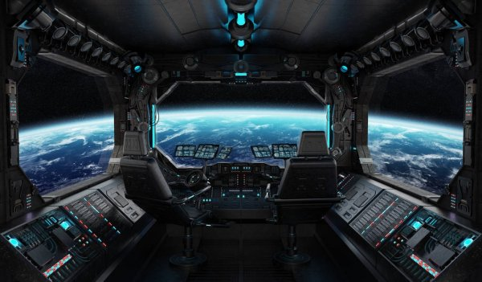

Information display system:
1. Integrated control panel (INPU).
2. Numeric keypad for entering codes
(to navigate the display of the INPU).
3. Marker control unit (used
to navigate the INPU display).
4. Block of electroluminescent indication
the current state of systems (TS).
5. RPV-1 and RPV-2 - manual rotary
valves. They are responsible for filling
oxygen lines from balloons,
one of which is located in the instrument compartment,
and the other in the very
descent vehicle.
6. Electro-pneumatic oxygen supply valve
when landing.
7. Vizier special cosmonaut (VSK). For
image transmission system applied
mirrors, about the same as in the periscope
on a submarine.
8. Drive control handle (throttle). With her
the ship's commander controls
engines to give "Soyuz-TMA"
linear (positive or
negative) acceleration.
9.Orientation control handle (OBM)
the ship commander sets the SoyuzATMA rotation
around the center of mass.
10. Refrigeration and drying unit (CCA)
removes heat and moisture from the ship, inevitably
accumulating in the air due to the presence
aboard people.
11. Toggle switches for switching on ventilation
spacesuits when landing.
12. Voltmeter.
13. Fuse box.
14. Button to start the preservation of the ship after
docking.
